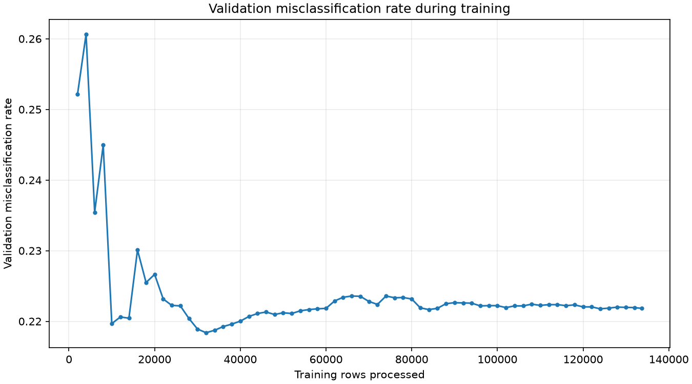
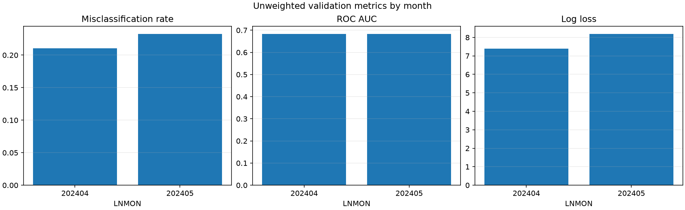
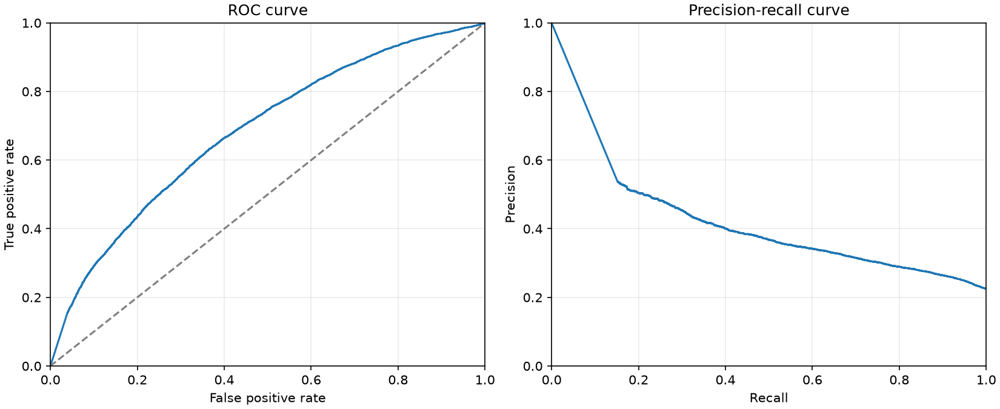
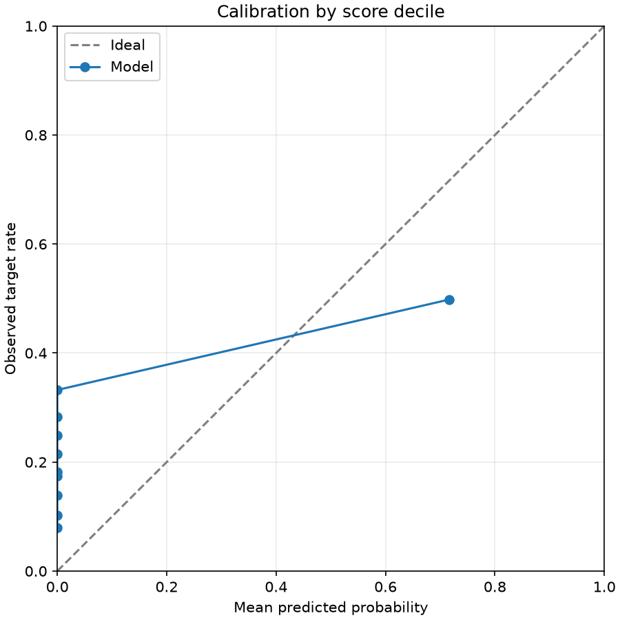
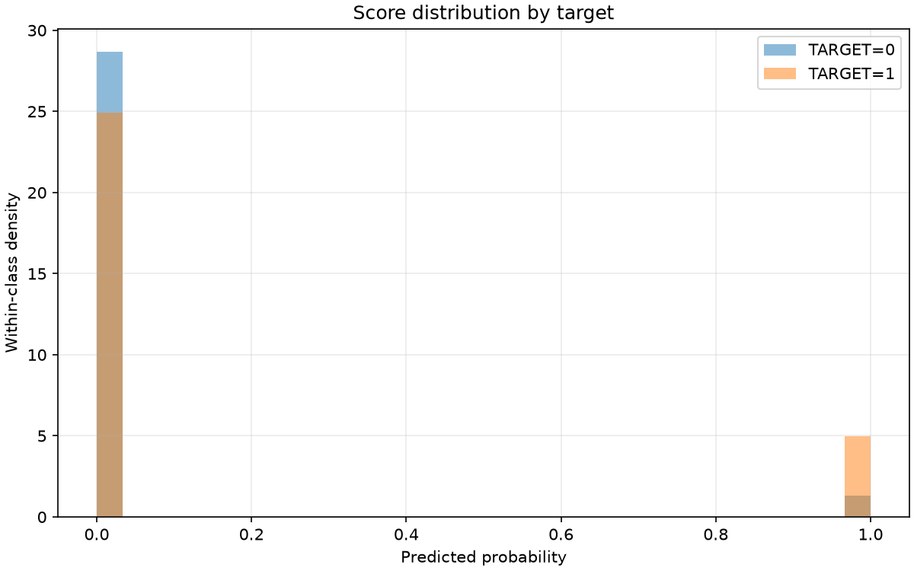
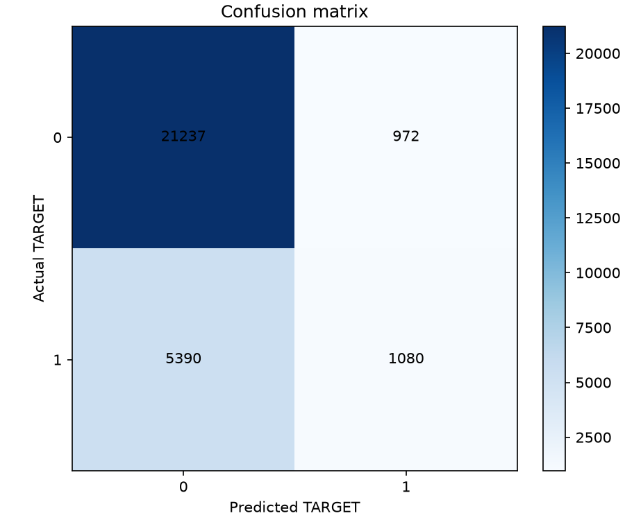

Final validation 0/1 loss (misclassification rate): 0.221835
The training curve uses the model's original validation protocol. Scores describe undersampled data, not an independent test set.
| scope | month | rows | target_1_rows | misclassification_rate | always_zero_error | target_1_rate | roc_auc | average_precision | log_loss | brier_score |
|---|---|---|---|---|---|---|---|---|---|---|
| overall_unweighted | all | 28679 | 6470 | 0.22183 | 0.22560 | 0.22560 | 0.68343 | 0.38615 | 7.80586 | 0.22153 |
| monthly_unweighted | 202404 | 13966 | 2989 | 0.21051 | 0.21402 | 0.21402 | 0.68338 | 0.37647 | 7.40069 | 0.21027 |
| monthly_unweighted | 202405 | 14713 | 3481 | 0.23258 | 0.23659 | 0.23659 | 0.68310 | 0.39512 | 8.19045 | 0.23222 |
| evaluation | protocol | months | month_weighted | misclassification_rate |
|---|---|---|---|---|
| training_protocol | v1 | 202404,202405 | False | 0.22183 |
| selected_protocol | v1 | 202404,202405 | False | 0.22183 |
| actual | predicted | rows | weight_sum |
|---|---|---|---|
| 0 | 0 | 21237 | 21237.00000 |
| 0 | 1 | 972 | 972.00000 |
| 1 | 0 | 5390 | 5390.00000 |
| 1 | 1 | 1080 | 1080.00000 |
| decile | rows | weight_sum | mean_probability | observed_target_rate |
|---|---|---|---|---|
| 1 | 2868 | 2868.00000 | 0.00000 | 0.08020 |
| 2 | 2868 | 2868.00000 | 0.00000 | 0.10286 |
| 3 | 2868 | 2868.00000 | 0.00000 | 0.13877 |
| 4 | 2868 | 2868.00000 | 0.00000 | 0.17469 |
| 5 | 2868 | 2868.00000 | 0.00000 | 0.18201 |
| 6 | 2868 | 2868.00000 | 0.00000 | 0.21478 |
| 7 | 2868 | 2868.00000 | 0.00000 | 0.24930 |
| 8 | 2868 | 2868.00000 | 0.00000 | 0.28312 |
| 9 | 2868 | 2868.00000 | 0.00000 | 0.33229 |
| 10 | 2867 | 2867.00000 | 0.71608 | 0.49808 |
| threshold | selected_for_primary_score | weighted_true_positive | weighted_false_positive | weighted_true_negative | weighted_false_negative | misclassification_rate | precision | recall | specificity |
|---|---|---|---|---|---|---|---|---|---|
| 0.10000 | False | 1090.00000 | 981.00000 | 21228.00000 | 5380.00000 | 0.22180 | 0.52632 | 0.16847 | 0.95583 |
| 0.20000 | False | 1085.00000 | 979.00000 | 21230.00000 | 5385.00000 | 0.22190 | 0.52568 | 0.16770 | 0.95592 |
| 0.30000 | False | 1084.00000 | 976.00000 | 21233.00000 | 5386.00000 | 0.22183 | 0.52621 | 0.16754 | 0.95605 |
| 0.40000 | False | 1084.00000 | 974.00000 | 21235.00000 | 5386.00000 | 0.22177 | 0.52672 | 0.16754 | 0.95614 |
| 0.50000 | True | 1080.00000 | 972.00000 | 21237.00000 | 5390.00000 | 0.22183 | 0.52632 | 0.16692 | 0.95623 |
| 0.60000 | False | 1077.00000 | 971.00000 | 21238.00000 | 5393.00000 | 0.22190 | 0.52588 | 0.16646 | 0.95628 |
| 0.70000 | False | 1076.00000 | 969.00000 | 21240.00000 | 5394.00000 | 0.22187 | 0.52616 | 0.16631 | 0.95637 |
| 0.80000 | False | 1076.00000 | 965.00000 | 21244.00000 | 5394.00000 | 0.22173 | 0.52719 | 0.16631 | 0.95655 |
| 0.90000 | False | 1072.00000 | 963.00000 | 21246.00000 | 5398.00000 | 0.22180 | 0.52678 | 0.16569 | 0.95664 |





